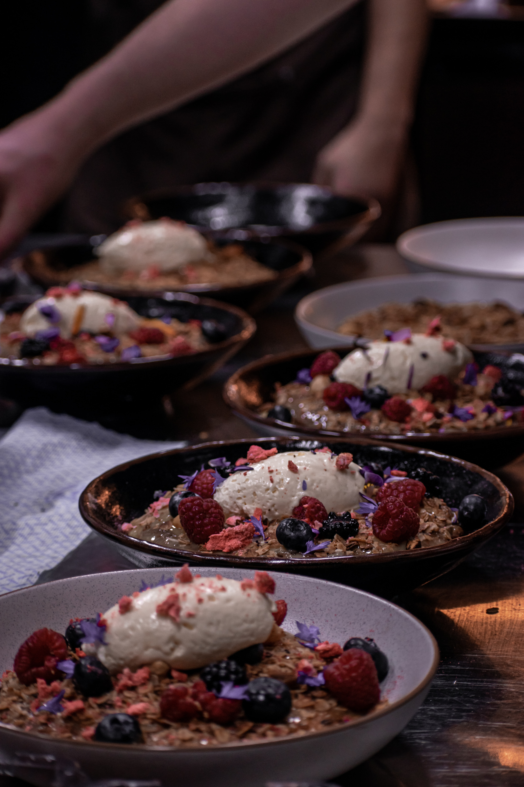

Pancake
Pancake are one of my favorite foods. Here is a recipe for tasty pancake:
Ingredients
- 2 eggs
- 2 bananas
- 2 tsp of vanilla extract
- butter
- 2 tbs of milk
Method
- Melt butter in a frying pan over a medium heat
- Gently mix the ingredients in a bowl
- Once butter has melted add the pancake mix
-
Using a spatula flip from the edge of the pancake to the center every 30
seconds (as if you are making an omelette
-
When the pancakes are still hot add maple syrup and a little bit of
butter
- Enjoy!!!!